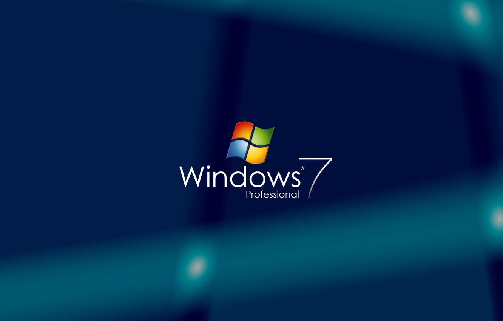

Windows 7Windows 7 was released by Microsoft on October 22, 2009 as the latest in the 25-year-old line of Windows operating systems and as the successor to Windows Vista (which itself had followed Windows XP). Windows 7 was released in conjunction with Windows Server 2008 R2, Windows 7's server counterpart. Enhancements and new features in Windows 7 include multi-touch support, Internet Explorer 8, improved performance and start-up time, Aero Snap, Aero Shake, support for virtual hard disks, a new and improved Windows Media Center, and improved security. Features of Dell Genuine Windows 7 ProfessionalBelow are some noticeable features which you'll experience after Dell Genuine Windows 7 Professional free download.
System Requirements For Dell Genuine Windows 7 Professional OEM DVD ISOBefore you start Dell Genuine Windows 7 Professional free download, make sure your PC meets minimum system requirements.
Dell Genuine Windows 7 Professional OEM DVD ISO Free DownloadClick on below button to start Dell Genuine Windows 7 Professional Free Download. This is complete offline installer and standalone setup for Dell Genuine Windows 7 Professional. This would be compatible with both 32 bit and 64 bit windows. |